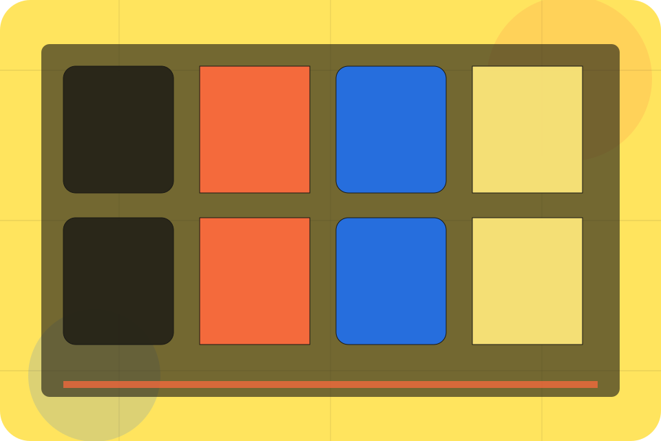

Agency / 01
Agency by Talent
Agency shaped for recruitment, hr & workplace services decisions.
Agency opens as a clear recruitment decision hub: what Talent offers, who it helps, why it matters, and which route to take first.
The first screen combines positioning, proof, primary action, and fast internal navigation, so people can act immediately or compare the rest of the agency route with context.
Recruitment scopeCompare optionsRequest advice
Yellow job magazine hero
Choose the audience
Select the closest route and Talent keeps the next step, proof, and follow-up expectation aligned with matching confidence for two audiences.

Agency / 02
Specialisms
Specialisms adds professional context to the agency route, using the editorial talent marketplace structure to support matching confidence for two audiences before visitors choose a next step.
Talent uses job story cards and focused copy to make the decision easier to scan, aligning the section with matching confidence for two audiences rather than filling space.
Explore AgencyContext
Specialisms gives the page a specific angle instead of repeating the navigation label.
Judgment
The job story cards show what to compare, what to avoid, and what matters most for recruitment, hr & workplace services visitors.
Direction
The final cue points to a useful internal route so the section keeps the journey moving.
Agency / 03
Values
Values adds professional context to the agency route, using the editorial talent marketplace structure to support matching confidence for two audiences before visitors choose a next step.
Talent uses job story cards and focused copy to make the decision easier to scan, aligning the section with matching confidence for two audiences rather than filling space.
Explore AgencyContext
Values gives the page a specific angle instead of repeating the navigation label.
Judgment
The job story cards show what to compare, what to avoid, and what matters most for recruitment, hr & workplace services visitors.
Direction
The final cue points to a useful internal route so the section keeps the journey moving.
Agency / 04
Team
Team introduces the people, roles, or specialist credibility behind Talent so the decision feels less anonymous.
The copy ties names, roles, credentials, or availability back to the decision on the page instead of treating profiles as decorative biographies.
Explore AgencyRole
The person, team, or specialist function connected to team is easy to understand.
Agency / 05
Market
Market adds professional context to the agency route, using the editorial talent marketplace structure to support matching confidence for two audiences before visitors choose a next step.
Talent uses job story cards and focused copy to make the decision easier to scan, aligning the section with matching confidence for two audiences rather than filling space.
Explore AgencyContext
Market gives the page a specific angle instead of repeating the navigation label.
Judgment
The job story cards show what to compare, what to avoid, and what matters most for recruitment, hr & workplace services visitors.
Direction
The final cue points to a useful internal route so the section keeps the journey moving.
Agency / 06
Standards
Standards gives the proof layer for agency: standards, evidence, and reassurance that make the next decision feel grounded.
Instead of relying on vague claims, Talent presents visible standards, process cues, and proof artifacts that help recruitment visitors judge fit.
Explore AgencyEvidence
Visible proof that helps visitors believe the claims behind standards.
Standard
The quality, safety, or operating expectation this section makes explicit.
Reassurance
What becomes clearer before someone decides whether to start hiring.
Agency / 07
Care
Care adds professional context to the agency route, using the editorial talent marketplace structure to support matching confidence for two audiences before visitors choose a next step.
Talent uses job story cards and focused copy to make the decision easier to scan, aligning the section with matching confidence for two audiences rather than filling space.
Explore AgencyContext
Care gives the page a specific angle instead of repeating the navigation label.
Judgment
The job story cards show what to compare, what to avoid, and what matters most for recruitment, hr & workplace services visitors.
Direction
The final cue points to a useful internal route so the section keeps the journey moving.
Agency / 08
Experience
Experience adds professional context to the agency route, using the editorial talent marketplace structure to support matching confidence for two audiences before visitors choose a next step.
Talent uses job story cards and focused copy to make the decision easier to scan, aligning the section with matching confidence for two audiences rather than filling space.
Explore AgencyContext
Experience gives the page a specific angle instead of repeating the navigation label.
Judgment
The job story cards show what to compare, what to avoid, and what matters most for recruitment, hr & workplace services visitors.
Direction
The final cue points to a useful internal route so the section keeps the journey moving.
Agency / 09
Trust
Trust gives the proof layer for agency: standards, evidence, and reassurance that make the next decision feel grounded.
Instead of relying on vague claims, Talent presents visible standards, process cues, and proof artifacts that help recruitment visitors judge fit.
Explore AgencyEvidence
Visible proof that helps visitors believe the claims behind trust.
Standard
The quality, safety, or operating expectation this section makes explicit.
Reassurance
What becomes clearer before someone decides whether to start hiring.
Agency / 10
Start Hiring
Talent closes the agency route with a clear action, a quick reminder of the value, and a low-friction way to start hiring.
Visitors who are ready can use the primary action. Visitors who are still comparing can scan the section links, proof, and support routes before they start hiring.
Start HiringThe final block keeps the choice simple: act now, compare one more proof route, or send enough detail for a focused response.
Start Hiringmatching confidence for two audiences
Start Hiring
A recruitment magazine site with candidate/employer split, bold editorial cards, people proof, and upload routes. Agency ends with a direct path to start hiring, plus enough context for visitors who still need to compare.
Notes
Information is provided for planning and should be reviewed for the final client, location, and operating rules.